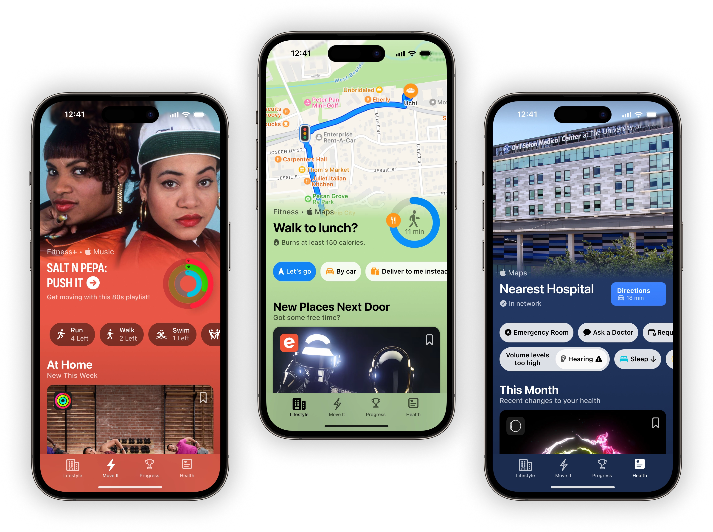
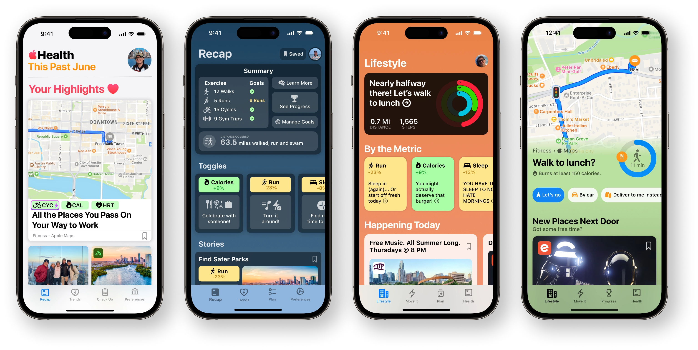
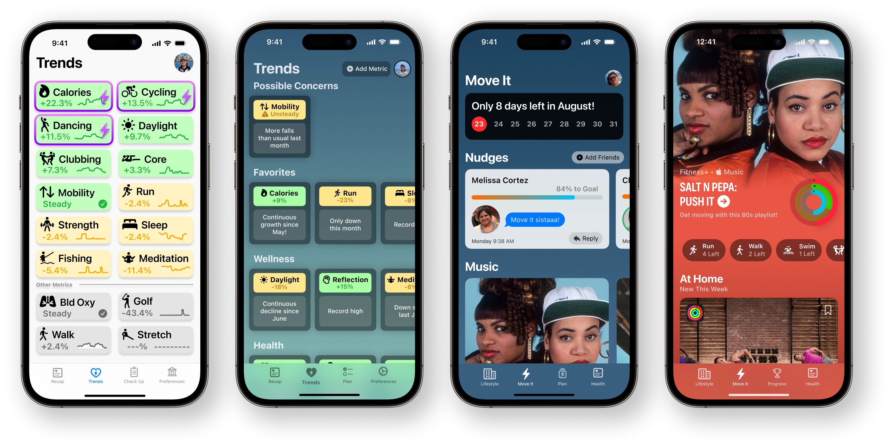
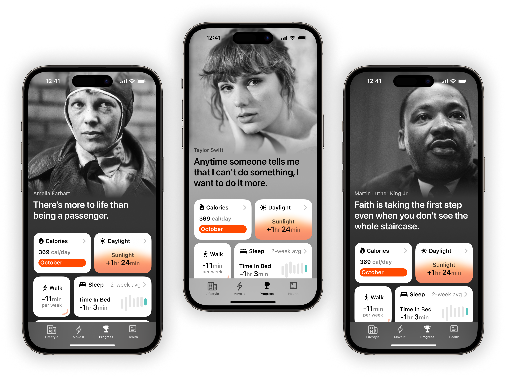
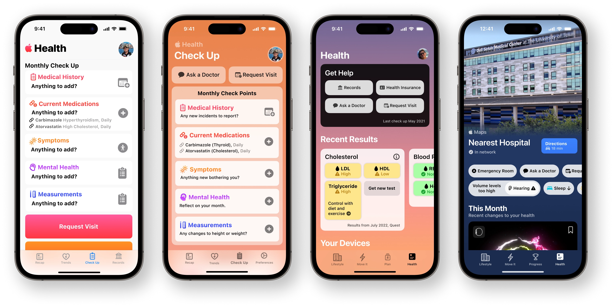

Values
Values
 Work
Work
 About
About
 Audio
Audio
Apple Health
The foundation of a healthy lifestyle.

Designed for Action.
The reimgained Apple Health app simplifies your journey to better health. Rediscover your city with a fresh perspective as you seek exciting new activities. Access apps, communities, and expert insights effortlessly. And engage in friendly competition with your iPhone like never before.
Concept • Designed in Austin
Apple Health Concept
Life in motion
New chapters await
Discover your next favorite restaurant, park, or exciting weekend event
Action at every corner
Headings seamlessly integrate the best of iOS and third parties to pick up plans where they left off.
Integrating third-party showcases into a native iOS experience inspires a new look at how every app can facilitate health. Editorial teams then curate and deliver stories to users with relevant metrics without compromising identity. It's the most private app on iPhone.
Integrating third-party showcases into a native iOS experience inspires a new look at how every app can facilitate health. Editorial teams then curate and deliver stories to users with relevant metrics without compromising identity. It's the most private app on iPhone.
What if we just knew?
We're all aware we could live healthier lives, but the question is: how? In-depth interviews with 29 participants also unveiled a toxic advice culture exploiting this same question.
Imagine if small changes, known to impact health, were presented as bite-sized experiences that keep individuals focused on enjoyable activities, rather than fixating on calorie counting or metric dashboards.
Imagine if small changes, known to impact health, were presented as bite-sized experiences that keep individuals focused on enjoyable activities, rather than fixating on calorie counting or metric dashboards.
Get Moving
Music that takes control of your feet
Looking for a place? We've got hundreds in mind.
Color new worlds
Your favorite artists called.
Get moving.
Get moving.

The power of music
What motivates us? For many, it's music—it's nearly instinctive.
Now, let's elevate that experience. Amplify it, and let the colors burst forth. Make us crave the thrill of headliner after headliner, only burning calories along the way.
Now, let's elevate that experience. Amplify it, and let the colors burst forth. Make us crave the thrill of headliner after headliner, only burning calories along the way.
Health as a byproduct
What if the goal wasn't to hit a calorie target but to jam out to nostalgic hits? And after the playlist ends, you'd snap out of it, thinking, 'Wow, that felt good!"
This is what research participants hinted at, even if they didn't explicitly articulated it. The right experience isn't obsessing over numbers; it's having fun.
This is what research participants hinted at, even if they didn't explicitly articulated it. The right experience isn't obsessing over numbers; it's having fun.
Compete with friends
Newsflash: You're in the lead
Challenge your friends and family to achieve their goals
A new type of challenge
Compete against your past self
Who can improve the fastest?
It might as well be you.

Compare yourself to yesterday
What motivates us? For many, it's music—it's nearly instinctive.
Now, let's elevate that experience. Amplify it, and let the colors burst forth. Make us crave the thrill of headliner after headliner, only burning calories along the way.
Now, let's elevate that experience. Amplify it, and let the colors burst forth. Make us crave the thrill of headliner after headliner, only burning calories along the way.
Monthly goals
What if the goal wasn't to hit a calorie target but to jam out to nostalgic hits? And after the playlist ends, you'd snap out of it, thinking, 'Wow, that felt good!"
This is what research participants hinted at, even if they didn't explicitly articulated it. The right experience isn't obsessing over numbers; it's having fun.
This is what research participants hinted at, even if they didn't explicitly articulated it. The right experience isn't obsessing over numbers; it's having fun.
Notifications
Different approaches to reminders
Don't worry, you can set your preference style
Health
Help as fast as possible
Maps that consider your insurance
Plus, the biggest stories about your health
Lessons Learned
Color requires attention
Imagine a creature, a relentless monster, perpetually craving attention. It swiftly grows dull, restless, and even grating to our eyes, relentlessly begging for optimization and constant update. That's color.
Working with color on this project produced a newfound appreciation for readability, composition, flow, and tones. And just when you think you've understood, a hiding hue comes from nowhere to bite and paralyze you. And it's somehow for the better.
Working with color on this project produced a newfound appreciation for readability, composition, flow, and tones. And just when you think you've understood, a hiding hue comes from nowhere to bite and paralyze you. And it's somehow for the better.
Health is different
For reasons yet to be fully understood, it's evident that a significant transformation is on the horizon in health.
Technology, while remarkable, cannot walk, run, or dance for us. We don't wake up with the same energy every morning; after all, we're not machines. Regarding health, we will require solutions that see beyond our body, that better serve our mind and its many behavioral quirks.
Technology, while remarkable, cannot walk, run, or dance for us. We don't wake up with the same energy every morning; after all, we're not machines. Regarding health, we will require solutions that see beyond our body, that better serve our mind and its many behavioral quirks.
Path to Lifestyle


Path to Move It
Path to Progress

Path to Health
